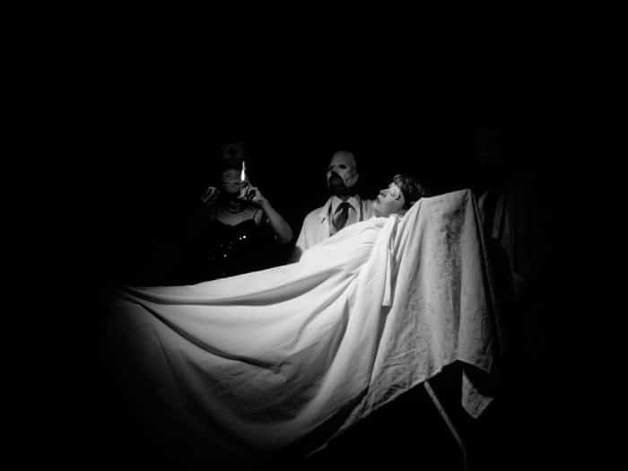
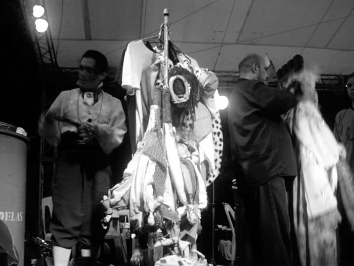
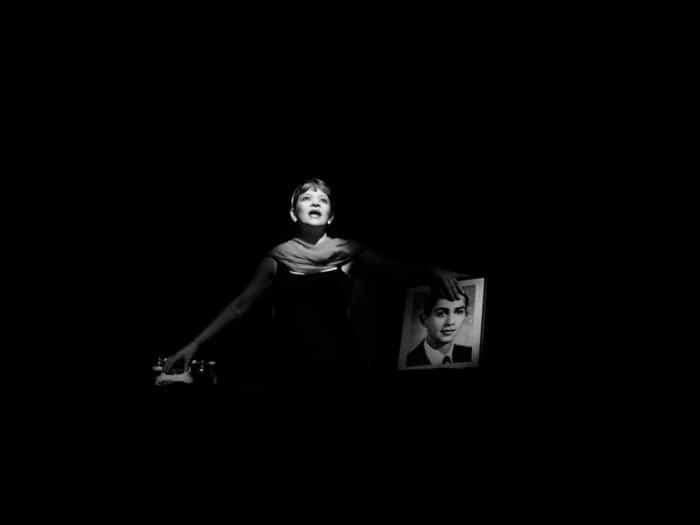
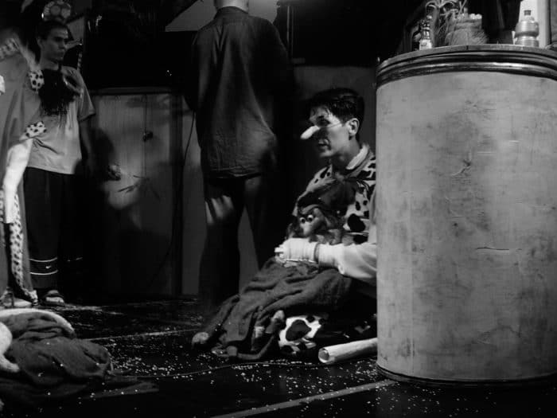

"La entrevista perdida de Cristóbal Peláez,
Matacandelas en Santo Domingo"
Conversatorio con el director del grupo de teatro Matacandelas.
Por Canek Denis.
Titulo esta entrevista como "perdida" porque así lo estuvo por mucho tiempo, hasta ahora. En el año 2007 tuve esta charla, había iniciado la transcripción de la grabación del audio cuando mi computadora fue atacada por un virus busqué ayuda de un amigo para curar y salvar el dichoso aparato. Se dañó, cambié a una laptop, pasó el tiempo y para colmo me robaron esa misma portátil con toda la información que llevaba años trabajando. Luego de mi largo duelo tecnológico y mi resignación como víctima de un robo y de un ataque ciber virulento, acepté que todo material existente en dicha laptop se había ido para siempre. Sin embargo hace unos meses entre cajas guardadas encontré unos siete discos compactos con el título de "backup" y ¡oh sorpresa! allí estaba. El amigo que en esa época me ayudaba con mi computadora cuando tenía problemas había hecho un respaldo de seguridad de todos los archivos de mi computadora. Gracias a él ahora puedo recuperar el audio, parte de la transcripción iniciada y el material fotográfico que hice para aquella ocasión de esta experiencia y que hoy puedo compartir.

Escena de "La chica que quería ser Dios" del grupo Matacandelas. Presentada en la Sala Ravelo del Teatro Nacional en el marco de la X Feria Internacional del Libro, Santo Domingo 2007. Dirección: Diego Sánchez – Javier Jurado – Cristóbal Peláez. Foto: Canek Denis.
Aprovechamos este momento para hacer público este material a propósito de la celebración de los 40 años de fundación del Teatro Matacandelas, agrupación teatral de Medellín, Colombia. Así mismo compartimos desde aquí el júbilo de haber conocido esta emblemática tropa y la alegría de saber que a pesar de todo, la raza casi extinta del "miembro" de un teatro grupal y sus especies en grave peligro de extinción: "el grupo de teatro" y "la creación colectiva", permanecen vivos gracias al trabajo y al ejemplo de compañías como el Teatro Matacandelas.
La primera visita de esta agrupación teatral a nuestra isla fue para el V Festival Internacional de Teatro de Santo Domingo del año 2006. Vinieron con dos espectáculos, uno infantil "Pinocho" y otro para adultos "Juegos nocturnos 2". Este último, subtitulado como "velada patafísica" dejó una huella profunda en mi como teatrero. Quedé maravillado y admirado con aquel montaje teatral. Música en vivo tocada por los mismos actores, títeres manipulados magistralmente, cantos, luces, superposición de imágenes plásticas y sonoras, todo espectador vibraba silenciosamente en su butaca si hasta el olfato se vio involucrado allí. Una "velada" llena de magia e imágenes, repleta de una ritualidad que conectaron espectadores y actores a niveles místicos pero a la vez tan humanos. Mezcla de dadaísmo y patafísica latinoamericanamente sazonada. Fue teatro, lo que se llama TEATRO. Al terminar la presentación me dirigí rápidamente a los camerinos de la Sala Ravelo del Teatro Nacional intrigado por saber con qué, cómo, quienes realizaban tales actos lúdicos. Saludé a un par de ellos al tiempo que algunos organizaban los tanques viajeros llenos de utilerías y objetos, mientras otros se cambiaba y quitaba maquillaje y prótesis de látex. Abarrotado el camerino de vestuarios, títeres y admiradores deseosos de verlos y conociendo yo ese ajetreo post función que nos fatiga a los actores, no pude hacer más que respetar su espacio y salir, no sin antes darles las gracias rápidamente por tan grata experiencia teatral.
Admirado por el trabajo de este grupo busqué información en internet, me empapé de su historia, de su quehacer teatral, de los escritos de su director y hasta me convertí en un seguidor patafísico (todavía hoy en formación básica). Durante ese festival, entre una función y otra encontré a los integrantes del grupo e intercambiamos algunas palabras. Pero para mí no fue suficiente, había ya probado aquel maná teatralis y requeria más. Afortunadamente al año siguiente Colombia fue el país invitado de honor de la X Feria Internacional del Libro Santo Domingo 2007 y vinieron a representar su país con dos montajes más, también uno infantil y otro para adultos, ambos de altisima calidad escénica. Nuevamente el de adultos me dejó impactado "La chica que quería ser dios", una pieza sobre la vida y obra de la poetisa Sylvia Plath. Nuevamente luces, humo, actuaciones exquisitas, ritualidad teatral signicamente cargada. Todo ello en una especie de concierto teatral en vivo, como un recital a modo de collage que apollado en una estética plástica cinematográfica alucinante, demostraba coherencia poética absoluta. Ahora si, en esta ocasión buscaría la forma de intercambiar impresiones con ellos, tenía que necesariamente hablar detenidamente con la cabeza detrás de todo esto, el tal Cristóbal Peláez.
Me dirigí a la tarima detrás del Museo del Hombre Dominicano donde presentarían la otra obra, "El hada y el cartero", un montaje de títeres para infantes. Igual calidad que las demás, con música en vivo, cantos, vestuarios llamativos, títeres y la capacidad de concentrar teatralmente a una multitud. Cordialmente, antes de la segunda función, me acerco al director en cuestión detrás del escenario y le digo mi intensión de conversar con él, que solo serían unos breves minutos, me dice que no hay problema, que encantado, que al terminar la función lo busque aquí mismo. Y así fue.
Con una baratija de reproductor de mp3 que grababa audio, mi primera camarita digital de 5 o 6 mega pixel, un cuadernillo con unas notas y preguntas que había preparado, esperé aquel momento. Así, con apenas 22 años de edad, sin experiencia alguna en este tipo de intercambios, pero con el ímpetu y la curiosidad a flor de piel, me atreví a interpelar al director Cristóbal Peláez.
Canek Denis: Para romper el hielo, háblenos de lo que es Matacandelas.
Cristóbal Peláez: Bueno, Matacandelas es un colectivo. Es un grupo que está realizando trabajos de construcción en grupo. Nosotros tenemos dos formas de trabajo que son: uno, el trabajo para adultos y el otro es el trabajo para los niños, que consideramos de que es fundamental y eso es lo que mantiene como cierto equilibrio de fuerzas creativas que nos importa muchísimo, porque el teatro representa como la fiesta popular, la alegría, el jolgorio. Y de otro lado, un grupo que yo considero como de mucha profundidad filosófica.
C.D.: Usted habla en ciertos artículos de su autoría en internet sobre lo que es el lenguaje dentro del teatro en general. Sería interesante saber cómo es el lenguaje de Matacandelas. ¿Cómo consideran ustedes el lenguaje de Matacandelas?
C.P.: Bueno… primero; nosotros no trabajamos un lenguaje, digamos en el plano idiomático, un lenguaje clásico, un lenguaje de otras épocas sino que es un lenguaje plenamente contemporáneo, incluso a veces es un lenguaje muy de nuestro país. Nos preocupa mucho, no un teatro local sino, un teatro que pueda dar cuenta también de esa universalidad. Pero consideramos de que el teatro es una ficción, no tiene por qué ser una tajada de realidad, y los lenguajes van de acuerdo también a una ficcionalidad. Es decir: todo lo que sucede en el escenario puede ser asombroso, no es un pedazo como digo de verdad, sino que es un pedazo quizás de mentira que a través del cual hay referentes digamos con la realidad, obviamente parte de la realidad, pero yo hablaría de algo muy pasional y algo muy dinámico.
C.D.: ¿Qué tipo de actores conforma Matacandelas?
C.P.: En primer lugar están los actores que son los muchachos deseosos de hacer teatro, empíricos, autodidactas, muchachos que reciben su formación o mal formación adentro del grupo y de otro lado una serie de actores que han venido de escuelas. Hay que entender que el Matacandelas ya está cumpliendo 28 años, en el momento en que surge Matacandelas es un grupo juvenil, aficionado, un grupo "vocacional" que llaman, un grupo que no es profesional no es de dedicación exclusiva y los actores los sacábamos, fundamentalmente muchachos muy jóvenes, del bachillerato. No había escuelas de teatro en la ciudad, la escuela de teatro de Medellín, la más importante, es la escuela de la Universidad de Antioquia que empezó a sacar estudiantes egresados licenciados a partir de los años ochenta y algo, el Matacandelas es fundado en el setenta y nueve. De allí también empezamos a surtirnos un poco con los actores. En este momento hay cuarto actores, más o menos, que salen de allí y otros que llegan al grupo simplemente por simpatía porque de repente ven en el teatro una opción de vida y se acercan y se forman en el grupo mismo.
C.D.: Para Cristóbal Peláez como teatrista, como gestor cultural, director de teatro, creador de teatro, ¿qué es el teatro?
C.P.: Hombre nosotros hemos tomado el teatro como una patria. Hay que buscarla y nosotros la hemos encontrado en el teatro, porque es una manera de divertirnos, una manera de hurgar en el pensamiento y es una forma de conocimiento la que nosotros practicamos, una forma también de interés por las sociedades, por el ser humano. Y ese asunto lo tratamos de llevar a la escena de esa forma porque el teatro todavía es la comprobación de que el ser humano esta interesado por el hombre… ¿Cierto? Y creemos que es un oficio, una pasión también. Ya lo hemos tomado como oficio, muy tenaz decirlo, al principio fue una pasión solamente y bastante deleitosa ¿cierto? Es un viaje entretenido. Creo que después de veintiocho, treinta años podemos decir que ha sido un viaje deleitoso con el teatro, una forma de hurgar en el otro, de conocernos y de mostrarlo también a los otros.
C.D.: En otro artículo usted habla de lo que es el relevo. Matacandelas surgió como segunda generación, luego de Enrique Buenaventura y otros teatristas muy importantes de Colombia. Para usted ¿qué importancia tiene, qué puede decir sobre las generaciones que van subiendo en el teatro colombiano y el teatro a nivel internacional? Las generaciones.
C.P.: Vea, lo que pasa es que ahí hay un problema muy tenaz porque nosotros somos de la segunda generación; la primera está conformada por Enrique Buenaventura, Santiago García que son los hombres que prácticamente inventan el teatro de Colombia. Es decir, dan esa propuesta a la comunidad que no la había, en Colombia no existía el teatro solo eran experiencias muy episódicas de compañías argentinas o españolas, me imagino que en Santo Domingo es la misma historia, que no constituye algo… un hecho social. De pronto estos hombres, una pleyade de personas, dentro de ellos hablamos de los mas destacados, fundan aquello que incluso llamó: el Nuevo Teatro, no sabíamos muy bien nuevo teatro respecto a qué, pero Colombia comienza a ponerse rápidamente a la orden del día y nosotros adoptamos las formas de producción que tienen estos padres nuestros Enrique, Santiago todos estos… fueron estas formas de producción: la producción en grupo. ¿Por qué? Porque no tenemos… no partimos de la industria cultural, no partimos de la compañía, no partimos de capitales sino de una serie de muchachos muy entusiastas por el teatro que lo hacen de una manera muy apasionada muy empírica a poco costo y que nunca pretenden vivir del teatro, viven para el teatro pero no del teatro.
De pronto este movimiento madura muchísimo, va obteniendo algunos alcances a nivel nacional y a nivel latinoamericano y quizá podemos decirlo que a nivel mundial empieza a tocar un poco Europa, se empieza a notar todo este cuento de la creación colectiva, la creación en grupo y se constituye el teatro en Colombia como un movimiento vigoroso. Y en este momento que estamos hablando, como de la tercera generación, hay una especie de nudo gordiano que no han podido resolver, uno: porque no hay forma de producir como la compañía europea, a partir de capitales, pero tampoco se quiere producir como grupo, cada muchacho que está saliendo de una academia quiere pues ingresar a una bolsa de trabajo actoral pero no hay bolsa de trabajo. Hay demasiada oferta y poca demanda.
C.D.: El asunto de trabajo-pan, trabajar para comer.
C.P.: Yo me supongo que es el mismo problema aquí en Santo Domingo, salís de la escuela y ¿que hacés? Te vas a manejar el almacén de tu mamá, el almacén de un tío o te vas de promotor cultural o alcanzas un puesto burocrático… es decir, no puedes tener una permanencia en el teatro, entonces en esa forma estamos en un problema en que los jóvenes, y por razones algunas muy valederas, no quieren seguir el sistema de la creación en grupo ni arriesgar, ni arriesgar el tipo, ni arriesgar su tiempo, ni su vida en eso, pero tampoco tienen una oferta de trabajo para ellos. Entonces está una situación muy difícil en que por ejemplo estamos viendo que no están apareciendo grupos. Están apareciendo por ejemplo; parejas, monólogos, equipos muy pequeños, porque es una economía como micro familiar, con grandes dificultades para la creación por la falta de tiempo.
[…] Nosotros hemos dicho que grupos en Colombia como La Candelaria, (1) grupos como Matacandelas ya son dinosaurios, el problema es que no hemos podido encontrar quien remplace a los dinosaurios, no hemos podido inventar el método, ahí estamos… Bueno… se habla de una "crisis" pero hay que recordar que la crisis viene desde Esquilo.
C.D.: ¿Y qué necesita entonces un grupo de teatro?
C.P.: Pues hombre… es que en esto… [Hace una pausa como buscando una respuesta que a él mismo le satisfaga]. Es que mire, nosotros siempre trabajamos con una premisa que es la de Federico Nietzsche: «El verdadero artista no pide mas que dos cosas: su pan y su arte» ¿cierto? Cuando yo fui a hacer teatro tuve grandes problemas con la familia porque me dijeron que me iba a morir de hambre, yo no he aguantao' hambre, es más, estoy hasta muy gordo ¿cierto? No he aguantao' hambre un solo día ni ninguno de los del grupo, tenemos como cosas básicas listas, lo que pasa es que el que se metió a teatro creyendo que iba hacer una fortuna es muy difícil ¿cierto?
C.D.: Se equivocó.
C.P.: Se equivocó.
C.D.: ¿Entonces por qué, para qué hacer teatro?
C.P.: Y esto es como un pajazo mental una masturbación que uno se hace. Es como una forma también de ocultar la vagancia, esto es mucho mejor que trabajar… ¿cierto? [Contesta con ironía, pero luego prosigue con toda honestidad]. Yo creo que el teatro te permite a vos estar elucubrando, pensado, haciendo filosofía y a la vez también te exige un training, te exige una cosa física ¿cierto? Porque es muy difícil uno estarse quieto no hacer nada, que sería lo ideal ¿cierto? Como el filósofo que se cortó la mano, los pies, se hizo arrancar los ojos, las orejas, la lengua para que el espectáculo de la realidad no lo distrajera. Entonces nuestra tarea básicamente incluso no es de teatrero, nuestra tarea básicamente es de filósofos. Yo creo que esa es una de las cosas que tiene que entender el actor y yo lo insisto mucho en Medellín en charlas, en talleres "¡coño esto es una visión filosófica sobre el mundo! No es simplemente para hacer maromas". Incluso se habla mucho del "adiestramiento actoral", fíjese que no tiene ninguna diferencia lingüística con el adiestramiento de perros, policías, de perros que buscan cerdos. El actor yo creo que es a veces menos training, menos cuerpo y yo diría que más pensamiento.
Las obras nuestras surgen de un montón de cosas, como la angustia, el misterio, la incomprensión de la vida, la paradoja social, toda la mierda y la carga que tenemos contra el mundo, con el mundo y para el mundo. Y yo creo que el teatro surge de eso porque es todo un oficio que involucra al alma que involucra al pensamiento. Si vos trabajás en un banco y tenés… es decir… un cajero en un banco no tiene comprometida el alma, tiene comprometido el cuerpo, pero en esto [del teatro] está comprometido el alma, el cuerpo, el corazón, todo y… estos son oficios de amor.
C.D.: […] ¿Cómo es el proceso de Matacandelas, el proceso de un montaje? ¿Cómo es el proceso?
C.P.: El proceso es casi un poco como al revés y es muy lento. Es decir, nosotros buscamos un tema, encontramos un tema, nos topamos con un tema o un autor que queremos trabajar, empezamos a ver qué es muy importante para nosotros, no para el público, en primer lugar nosotros no pensamos en el público, nosotros pensamos en nosotros. Ahí hay un poco una especie de trampa porque de todas maneras… uno hace parte de la humanidad si esto [del teatro] a mí me interesa. Hay temas que de entrada nosotros tenemos descartados ¿cierto? Por ejemplo a mi no me interesa el problema de las infidelidades, de los cuernos o de gastar una hora y media […] como estas obras que estamos viendo. En Colombia hay una pleyade de obras que llaman teatro de semen o teatro de chistología: "El taxista y sus dos amantes", "Esposa y moza vida sabrosa", "Me quedé en el segundo, échame el tercero", "Muéstrame tu pepita" y un teatro de porquería para hacer reír pues a la plebe ¿cierto?... Buscando como regresar un poco a las cavernas "hombre regresemos a las cavernas un poco" [dice con sarcasmo].
Uno sabe que la humanidad está avanzando pero no toda la humanidad. Es decir, la ciencia, el pensamiento, la inteligencia son cosas que están muy mal repartidas, el talento sí está muy bien repartido porque los seres humanos tienen mucho talento. Pero hay una gran autocracia respecto al pensamiento, a la inteligencia, la ciencia, al arte y yo creo que al ser humano se le está escapando cosas muy muy importantes, entonces hay temas que a nosotros no nos interesan. Nos interesa mucho por ejemplo el misterio, lo onírico, nos interesa mucho por ejemplo la soledad, nos interesa mucho el desamor, nos interesa mucho la incomunicación, la muerte, todos esos temas nos interesan. Esos temas que son como los motores del ser miel todo eso que mueve al ser humano y que es como un motor que los hace obrar de alguna u otra manera. Entonces sobre eso improvisamos muchísimo, hacemos digamos improvisación, nosotros lo llamamos más bocetos, como el pintor cuando coge un lápiz. Y la metodología la cogimos, pues aparte de todo lo que el teatro colombiano y el teatro latinoamericano nos han contribuido, la cogimos mucho de los pintores y fundamentalmente de un pintor que nos parece muy riguroso en eso que es Picasso. Si vas a ver en el Museo Reina Sofía el Guernica, son más importantes los estudios sobre el Guernica que el Guernica mismo, entonces es interesantísimo el proceso. Todo eso que uno va echando como a la tras escena, se van quedando cosas, se van quedando cosas y va saliendo como un sedimento como una especie de zumo, de jugo que sale de toda esa vaina que de repente uno lo transmite y es importante porque el tema tiene que ver con las afugias del hombre, el hombre es un ser que sufre mucho.
Unos creen que el ser humano es una criatura muy diversa, y que… no, no. Nosotros detrás sabemos que es una peste que le cayó al planeta. [Alza la voz con indignación] Si lo peor que le sucedió al planeta fue este hijo e' puta especie. Entonces la teoría que hay por ahí filosófica es de que finalmente todo esto se hizo para que Shakespeare pudiera escribir sus obras. [Silencio]. Entonces a uno le preocupa porque es una criatura extraordinaria, o sea es la criatura más depravada y pavorosa del planeta. No hay una criatura más cruel ni más triple hijo e' puta que esta, y no hay una criatura más poética que ésta, es que eso es lo que impresiona. Entonces sobre estas cosas se juega, sobre la criatura extraordinaria. Nosotros leemos mucha filosofía, nos auxiliamos mucho con expertos y realmente es un factor que nos interesa mucho del teatro. […]
Ha sido una labor muy silenciosa, de hecho el Matacandelas es un grupo muy reconocido ya en Colombia, pero no es reconocido a partir digamos desde el tercer, cuarto, décimo año sino en los últimos diez años, por una labor silenciosa que llevábamos muy tranquila y yo diría que muy sobria. Nosotros somos muy estáticos un teatro muy sencillo, por ejemplo alrededor de Sylvia Plath(2) nos decían acá: "No, mire la obra me dio muy duro porque ese tema del suicidio no es un tema caribeño". Y yo le decía a la persona que me lo dijo: "¿Pero cómo así? O sea, ¿la imagen que usted tiene, la imagen que van a vender del Caribe es casinos, gente bailando bachata, que no tiene angustias?". Es impresionante. "Es que el suicidio no es una cosa muy caribeña" [recuerda imitando una vocecilla]. Le dije: "no es caribeña, es muy humana", ¿cierto? Nos parecía muy importante ahora, […] traer este tema, a mucha gente le ha parecido difícil. Es que el suicidio es un tema muy tenaz, pero las sociedades se preocupan de que el ser humano se autodestruya. Pero hay que entender de que el Estado no es el dueño de mi vida ni el dueño de los aparatos genitales míos. ¿Cierto?
C.D.: Usted habla de que la permanencia importante de un grupo es de 15 años y ya llevan 28. ¿Cómo se ven dentro de 15 años?
C.P.: Muy viejitos. [Risas]. Mira aquí hay una cosa, eso los periodistas en Colombia me estaban enloqueciendo en una época en que yo no estaba preparado para eso. [Dice con tono de recuerdo] "Bueno, ¿qué va a pasar cuando Cristóbal Peláez se muera, que esté viejito, qué va ha pasar, qué va a pasar con el grupo?". Vea, a mi me importa un culo. [Más risas]. Es decir yo no tengo deseos de trascendencia, lo que pasa es que yo tengo una ventaja sobre el resto de los teatristas, uno: no me interesa que me nombren después de muerto ni en vida, no me interesa. Siempre mantengo un perfil bajo. [Dos] Me interesa más el grupo o sea que salga el grupo. En tercer lugar: no tengo ánimo de pasar a la historia y no tengo ánimo incluso de hacer obras para que me contraten. ¿Cierto? De hecho pues me han llamado ya de dos países, me llaman constantemente de la capital y no, no tengo tiempo. No tengo tiempo. Yo con el Matacandelas estoy entregado a trabajar y he dicho: «Lo que pueda hacer acá, lo puedo hacer acá, lo que no es capaz de dar acá no es capaz de darlo en ningún lado». Trabajo mucho como a partir de ese poema de Constantino Cavafis, "no hay barco para ti si has destruido tu vida en esta ciudad quiere decir que la has destruido en todo el universo". Yo no creo en eso de que yo soy un huevón aquí pero si me dan la oportunidad de ir a Nueva York voy a ser un putas. ¿Cierto? Aquí tuve una charla con unos muchachos la vez pasada y los ocho huevones que les di la charla, los ocho se querían ir para Estados Unidos y yo les dije: "Mire, ¿qué tiene de malo República Dominicana? Coño es el país, hay que querer al país, no con un nacionalismo, un patriotismo barato sino… ¡Coño!". A nosotros no nos daban un peso porque éramos de Medellín, Medellín es un hueco. Medellín, si ustedes lo conocieran es un hueco con gente donde no llega turismo donde tenemos la más mala fama del mundo. Llegamos a ser, ahora estamos un poquito superando eso, la ciudad más violenta del planeta. ¡La más violenta! Donde más muertes ocurrían, más muertes que en las guerras.
A nosotros nos daba risa porque decían "en Kosovo en la guerra murió en esta semana trescientos" y uno decía "hijo e' puta aquí en la lista aparece que en Medellín murieron quinientos", supuestamente sin guerra. O sea es una ciudad difícil, porque es una ciudad muy enclavada, con una gente todavía muy territorial, muy asustada del mundo, es muy vertical no es horizontal, el concepto de espacio nuestro es muy estrecho, son muy provincianos, etcétera. Pero a nosotros nos decían, y alguna vez que surgió la posibilidad, "¿por qué no se van a trabajar a Bogotá?" No, dijimos. No no, lo que hagamos aquí lo hacemos acá, pero si somos unos huevones aquí vamos a ser unos huevones en cualquier lado del mundo. Esas oportunidades a uno no se las dan, uno las abre y el teatro es un arte difícil desde ese punto de vista, que uno no le consagra horas uno le consagra la hijo e' puta vida toda. Matacandelas trabaja a un ritmo casi de catorce horas diarias, pero nosotros no sentimos el trabajo. Nosotros podemos decir que es nuestra casita que logramos conseguir después de once años de sudor.
C.D.: La casa de los Ramírez(3) .
C.P.: Si. Sudando sudando y la pagamos peso a peso, no nos dieron nada, ni agua. Peso a peso haciendo funciones y bueno… es una casa grande, es una casa como la Casa de Teatro; la casa nuestra es unos setecientos metros cuadrados. Nosotros solemos decir en Colombia que eso es una república independiente. Nosotros allí hijo e' puta trabajamos, hacemos, le sacamos a esos todo el provecho. Pero mire, más que grupo es, es… yo lo insisto mucho: con una idea se construye un grupo. El asunto es la idea… donde está la idea, alrededor de la idea se nuclea. Mire una cosa, allá no se consiguen actores uno habla con mucha gente que te dicen: "No hermano, ¿dónde consigo yo actores? es que no encuentro actores en ningún lado"; y les comento que nosotros tenemos casi en un promedio al año de ciento y punta de cartas de gente que quiere ingresar al grupo y le decimos, "¡No por favor esto es muy duro acá!". Esto es como en el poema de William Carlos Williams: "¡Señoras y señores arremangaos que vamos a cruzar el infierno!". Aquí se trabaja muy duro, es como el infierno de Dante, "Los que aquí entréis, abandonad toda esperanza". Y es verdad, hay gente que entra y dice: "¡Oh! ¡Hijo e' puta esto es el infierno hermano, me echó la novia, me echó, el tío, me echó mi mamá, me eché a todo el mundo de enemigo!".
[Prosigue con tono de aclaración] Ahora, a nosotros en Medellín nos llaman los monjes, porque nos mantenemos encerrados, dicen: "no, es que estos tipos han tomado el teatro muy en serio". Pero es como una cosa bonita que tenemos en Medellín, porque en Medellín nos quieren pues. Nosotros no tenemos esa cosa del teatrista resentido que dice, "que va hijo e' putas no hay apoyo", no, nosotros decimos "que hijo e' puta apoyo, ¡vamos a trabajar teatro!" y hacemos teatro. Y bueno, somos un grupo con un record de funciones al año bravo, más o menos un promedio de 240 funciones (4), eso es lo que nosotros hacemos.

Uno de los actores de Matacandelas se prepara detrás del escenario para la segunda función de "El hada y el cartero". A la derecha vemos el director Cristóbal Peláez en plena faena, hasta manipula títeres y pirotecnia en esta obra. 2007. Foto: Canek Denis.
C.D.: Es la segunda visita que hace Matacandelas al país: la primera en el Festival Internacional de Santo Domingo del 2006 y la segunda ahora dentro del marco de la X Feria Internacional del Libro; ¿cómo es para Matacandelas el escenario de Santo Domingo, que opinión le merece?
C.P.: Es algo que uno todavía no alcanza como a comprender, abarcar, ¿en qué sentido? Por ejemplo, nosotros vinimos como esa obra de Patafísica(5) que dijimos, "¡Uh! ¿Allá como irán a mirar esto?". Teníamos una gran curiosidad. A ver, la curiosidad que teníamos con el espectáculo infantil(6) , que salimos impresionados. Le juro que en una escuelita, no recuerdo cómo se llama, hicimos la función mas rara del mundo, o sea nunca nos había pasado eso. Aquí en Santo Domingo en una escuelita popular. Yo le dije a los muchachos: «muchachos esto es una función de guerra, ¡pilas!»… porque me fui por los salones de la escuela y es una escuela de artes y oficios o algo así o de artes y yo no vi niños, vi puros adolescentes de 14, 15, 18 años y yo dije, "esto va ser duro, esto es función, lo que nosotros llamamos función de guerra". Y empezó la función y cuando terminó la función nosotros dijimos, "¡esta gente está viva dos veces!" [Dijo en tono de sorpresa]. O sea es una cosa impresionante la participación, el cariño, los gritos, cómo gozaban. Claro, el dominicano tiene una ventaja, es que tiene un cuerpo mucho más móvil que el nuestro, es decir aquí ponen música y la gente ya está bailando, en Medellín no es así, es una ciudad andina, se baila pues pero… hay mayor dificultad con el cuerpo. En República Dominicana pasa un poco como con el Brasil, el baile está como en la sangre ya. Y la música, impresionado por la musicalidad de la gente acá, en el hablado… [Vuelve a retomar el hilo de la pregunta] Como que tengo una impresión que puede ser como falsa, pero en fin: que todo está por hacer en ese terreno. Porque la gente como que quiere y quiere ver, ver espectáculos. Entonces yo los veía por ejemplo en el festival la actitud del público. […] Yo creo que hay mucha curiosidad por el teatro, uno nota que la gente entra a los diez minutos o a los cinco ya dice "ya más o menos sé que es, me voy". Esa curiosidad se puede trabajar, a partir de ahí armar un público. Yo creo que está creciendo un público, hay algo que me gusta, es que el público es muy joven. Entonces primero da cuenta de dos cosas, porque en Colombia pasa lo mismo: primero, que no hay una gran tradición, por ejemplo como en Cuba donde la mayoría es adultos cincuenteros pa'rriba, aquí es muy joven. Observo al público y yo decía "¡qué maravilla!". […]
C.D.: Tengo una serie de palabras para que usted me diga lo que le llega rápidamente a la mente. Escenario.
C.P.: Libertad.
C.D.: Suicidio.
C.P.: Vida.
C.D.: Caída.
C.P.: Elevación.
C.D.: Subsidio.
C.P.: Aburrimiento.
C.D.: Gobierno.
C.P.: Vacío.
C.D.: Creación.
C.P.: La vida.
C.D.: Espacio vacío.
C.P.: Posibilidades.
C.D.: Silencio.
C.P.: Teatro.
C.D.: Carnaval.
C.P.: Alegría, paz.
C.D.: Circo.
C.P.: Esplendor.
C.D.: Coca cola.
C.P.: Deliciosa.
C.D.: Fractura.
C.P.: Inconveniente.
C.D.: Paradigma.
C.P.: La palabra más bella. [Un breve silencio por tan acertada respuesta].
C.D.: ¿Qué recomienda a los jóvenes que quieran y que estén haciendo teatro?
C.P.: ¡Hombre! Ya cuando uno empieza a recomendar dicen por ahí que se está volviendo viejito. [Risas]. Mirá, con los jóvenes… es que una chica aquí me decía, "mire tengo un problema porque tenía un grupo pero con los actores tuve problemas porque yo les ofrecía dinero y no les parecía suficiente entonces no tuve con quien trabajar el proyecto". Y yo le dije, […] "Cuando usted le ofrece plata le empiezan a discutir alrededor de la plata, no les ofrezca nada y verá que la gente se pega". Es que la gente se pega de la filosofía. Yo a los actores no les ofrezco nada, los actores tienen cosas pero, yo no les tengo un sueldo y cuando entran yo no les digo soy un patrón… ni soy un empleador, ni estoy acabando con el índice de desempleo en Colombia; "¡Bienvenido al infierno mi hermano! Esto es a pelearla, a sudarla". […] Y todavía sigo haciendo teatro porque siento que todavía no he hecho un culo. Pero hay cosas que uno dice "¡uy! la creación". ¿Cierto? [Enfatiza como con anhelo] Crear. Recordemos la frase de Pessoa que es muy linda, los antiguos navegantes tenían una frase que era muy gloriosa, "Vivir no es necesario, navegar es necesario." Entonces dice Pessoa: «Yo he adaptado para mi vida esa frase que dice así: "Vivir no es necesario, crear es necesario."» Porque es la manera también cómo uno justificarse. Porque epa' es muy triste que vino gente al mundo a gastar Blue Jeans. Es eso…Yo creo.
Mira hay algo como muy importante que yo quiero decir, es que por ejemplo en Medellín hay algo de lo que decía, la gente nos quiere mucho. A veces cuando se hacen reuniones alrededor del día internacional del teatro uno oye la gente renegando […], nosotros somos muy duros para decir las cosas también pero […] el público muy bien, el público nos trata muy bien, tenemos un muy buen público, tenemos como una especie de comunicación muy chévere con una juventud en la ciudad. Nos quieren mucho nos respaldan mucho pero es también porque la gente agradece mucho las ideas.
La mujer más comercial que hay en Colombia que es Fanny Mikey (7), ¿la han oído mencionar? Eso es un monstruo. Eso es un monstruo, está haciendo el festival más grande del mundo, pero record Guinness. Una maravilla, es una maravilla ese festival, que es impresionante. Eso es una cosa que no la tienen ni los alemanes, ni los gringos, está en Bogotá ese festival ¡es record Guinness!
C.D.: ¿Es el Festival Iberoamericano de Bogotá? ¿El que es cada dos años?
C.P.: Si. Y ella tiene unos espectáculos algunos muy buenos, muy inteligentes, muy profundos, otros muy chotis como se suele decir, muy comerciales; y alguna vez fue a Medellín y dijo: "cuando voy a Cali gano mucho dinero, en Bogotá mucho dinero, Pereira mucho dinero. En Medellín cuando vengo estoy perdiendo dinero, el público no está yendo a ver mis obras, yo me estoy suponiendo que es que Matacandelas lo está mal acostumbrado a ver buen teatro."
C.D.: ¿Cómo ve la visita de Matacandelas a República Dominicana como posible influencia teatral?
C.P.: Eso no lo sé responder. A nosotros nos gustaría no influenciar a nadie, nos gustaría más por ejemplo provocar una actitud de trabajo frente al teatro, por lo que yo le decía antes, es decir de pasión, de que la cosa no es fácil. Es que mire, ahora que lo que está pasando, lo que la gente te dice "no hermano esto es una mierda aquí no hay teatro". Todo el mundo se me queja de la escuela [de teatro] "yo quiero una oportunidad entonces voy a ver si me voy pa' Nueva York o a ver si me voy para Cuba y a ver si me contratan en una obra y cualquier porquería de obra que me llamen bien porque [así] tengo trabajo". ¡Ah! el problema suyo es de desempleo, el problema suyo no es artístico ¿cierto? Es decir la discusión tiene que ser en torno a la estética no en torno al problema si me falta con que pagar arriendo. Mira, cuando uno se mete al teatro, pienso yo, esta es mi verdad es el caso mío no es una verdad universal, yo me metí y me hice mi juramento, yo dije: "Así hijo e' puta yo tenga que robar, hijo e' puta tenga que aguantar hambre, tenga que hacer lo que sea, pero mi teatro no me lo van a quitar. El teatro a mí no me lo van a quitar, porque a mí me gusta el teatro, es la posibilidad del espacio donde yo puedo hablar con el hombre". […] Nos interesa el ser humano, si están hablando de los problemas del hombre, si están proyectando eso. Entonces es ese espacio donde todavía… es como lo contrario de toda esta hecatombe que está pasando, donde vamos hacia, obviamente y no lo estoy diciendo desde un plano muy pesimista, "la autodestrucción". Me parece bien, es decir, yo no tengo ningún problema con eso. El ser humano me parece una criatura bella… ¿Se quiere autodestruir? ¡Ah bueno hermano!, esa es su voluntad y eso hay que decirlo en el teatro. ¿Cierto?

La actriz Ángela María Muñoz interpretando con encanto a la poeta Sylvia Plath en "La chica que quería ser Dios". 2007. Foto: Canek Denis.
C.D.: ¿Y la estética del Matacandelas?
C.P.: Eh… Mirá es muy difícil responder eso. Yo creo que es… En primer lugar nosotros hacemos un teatro de barraca, de feria, por eso es que estas obras aquí están como en su punto, para esto fueron montadas.(8) Es un teatro, nosotros decimos es un teatro muy hermético. A nosotros en Colombia a veces dicen que hacemos un teatro muy cerrado muy hermético, para una élite. Nosotros consideramos que el criterio democrático es el criterio brechtiano. No hacer un teatro de posiciones para que la gente se ría sino un teatro donde uno pueda reconocerse pero reconocerse la gente más inteligente, a nosotros no nos interesa trabajar para idiotas. Ya sé que no es culpa de la gente, es un estado una situación un sistema que los embrutece ¡pero hay gente que no entiende! Alguna vez decíamos en Colombia, hombre, va llegar el momento en que un actor se pare en un escenario y diga: "Hoy es miércoles." Y un público va a decir: "no sé de qué está hablando, me perdí ¿qué es hoy y qué es miércoles?". ¡Porque vamos hacia una carrera del embrutecimiento de la fama de hijo e' puta!
[…] La función del teatro no es aprendizaje ni llevar una enseñanza, independientemente de que yo le pueda meter un mensaje, se puede es cierto, hasta con el teatro se han hecho experiencias en Colombia donde a los campesinos se les enseña de una manera pedagógica sobre las cosechas, hasta para pasta dental Colgate se utiliza teatro como campaña, etc…. Bueno, el espacio propiamente del teatro, el espacio propiamente, es el espacio de la emoción, del estremecimiento. Si el teatro no logra el estremecimiento ahí no hay nada. […] Yo lo hago a partir de mi espectador modelo. Bertold Brecht decía «cada vez que estoy montando una obra siento a mi espectador modelo en una butaca». Y estoy ensayando y es como si lo mirara y le dijera "¿bien?", y mi espectador modelo es Marx, Carlos Marx. [Silencio]. Claro.
Humberto Eco… ¿Ustedes leyeron En el nombre de la rosa y supieron de la historia? ¿Lo del editor que le dijo quítale las cien primeras páginas? y él dijo "el que no pase esas cien primeras páginas a mi no me interesa conocerlo". A mi no me interesa que un señor que venda chicharrones allí […] un patán un hijo e' puta diga "¡Oh! Que obra tan hermosa". No. Es que ese man ya está perdido, está perdido y el teatro no puede en una velada, en el lapso de una hora y media devolverle a usted todo lo que le ha robado el sistema.
Es decir, a nosotros nunca nos dijeron que existía la belleza y que yo puedo ser camionero y ¡ser un hombre bello! Ahí viene el grito de Lautréamont que es el grito más revolucionario de todos, más que el marxismo, los poetas saben mucho se eso. Lautréamont dice, "la poesía debe de ser hecha por todos". Rimbaud no dice como Marx, vamos a cambiar el mundo sino "¡hay que cambiar la vida, hay que volver a inventar el amor!" Entonces uno está trabajando con una cosa que ya es de alta filigrana, que es la poesía ¿cierto? Está bebiendo de una fuente de la hijo e' putas, no de la fuentes de Darío Fo que es un huevon que ganó un Nobel o un viejo marica como el Gabriel García Márquez que es un lame culos del gobierno colombiano no no no, hablo de las grandes ligas. Grandes ligas es cuando estamos hablando de Rimbaud de… ¡las buenas lecturas! Aquí se dice en la feria "LEA" pero no dice "no lea porquerías". Una señora dice "ah, el libro de Paulo Coelho". ¡Señora por dios no se intoxique! ¿Cierto? Una mala lectura te puede matar y te envenena el alma, te inhabilita para apreciar la belleza. Entonces también ¿qué lees? ¿cierto? Entonces vos me estás hablando de estremecimiento. Es decir, uno está por todos los medios bregando a provocar ese estremecimiento, porque es el espacio único del teatro, de ahí no hay más. Como cuando lees un poema de Borges y vos decís, hijo e' puta se me metió un veneno en la sangre hijo e' puta que no me la puedo sacar. ¡Es eso! […] Uno convoca a gente con mucha angustia. Yo creo que la gente que llega al Matacandelas es gente con una angustia de la hijo e' puta. […] Ojo, nosotros somos el grupo más alegre yo creo que del mundo. […] [Sin embargo, agrega como aclarando] Si uno no se aproxima a la tragedia al drama del hombre al misterio entonces qué valoración tiene uno de la vida. Lo demás ya está en la página www.matacandelas.com. [Y así concluyó, nos dimos las manos, las gracias y adiós].
Ésta, más que una entrevista propiamente dicha, fue más bien una conversación. Los breves minutos, quizás 15 o 20 a lo mucho, que al inicio pensé duraría nuestro diálogo, se convirtieron en 46 minutos de una conversación reveladora y amena. Mis preguntas e intervenciones fueron más bien detonantes para dar rienda suelta a que Cristóbal Peláez expresase sus ideas y pensamientos.
Organizando, transcribiendo y editando este material, aún hoy luego de doce años, encuentro que aquellas respuestas, anécdotas y pensamientos mantienen una vigencia aplastante. Pueda que parezca irreverente por su lenguaje, sin embargo no por ello deja de ser honesto y frontal, quizás mordaz para algunos por su franqueza, pero para otros como yo, lo considero sincero y de un humanismo crudo y sin censura, sin tapujos, pura y necesariamente filosófico. Sin pelos en la lengua, el discurso con que Peláez establece su idea y filosofía del teatro y de la vida misma, es muestra de una convicción y de un compromiso absoluto con la humanidad. Y así lo asume, comparte y transmite el Teatro Matacandelas desde Medellín para el mundo, lleno de amor y pasión, estremeciendo con su trabajo a quien se disponga a asistir y dejarse llevar por el acontecimiento humano más vivaz, experiencial y fundamental que pueda existir, el teatro.

Uno de los actores (Faber Londoño) espera, títere en mano, tranquilamente su turno antes de volver a salir a escena en "El hada y el cartero". 2007. Foto: Canek Denis.
El Teatro de La Candelaria es una agrupación fundada en 1966. Esta agrupación ha constituido un movimiento y una escuela teatral de suma relevancia en la región. Hoy es considerada una de las agrupaciones mas importantes e influyentes de latinoamérica, tanto por su larga trayectoria de 53 años en las artes, como por sus siginificativos aportes al desarrollo de la creación colectiva, la generación y producción de material teórico.
Se refiere a la obra "La chica que querías ser dios", creación colectiva del mismo grupo sobre la vida y obra de la poeta estadounidense Sylvia Plath. Esta puesta en escena fue presentada en Santo Domingo en la sala Ravelo del Teatro Nacional en el marco de la Feria Internacional del Libro del año 2007.
Consulte en su web la interesante historia de "La casa de los Ramírez" escrita por Juan José Hoyos en la que narra cómo llegó el grupo a adquirir esta casa de Medellín donde hoy tienen su "sede" oficial. Recuerda ésta de cierta forma la historia de Freddy Ginebra y su Casa de Teatro aquí en Santo Domingo.
Las cifras de esta agrupación son impresionantes, de 1979 al 2017 ya habían sobrepasado las siete mil funciones y casi millón y medio de espectadores. Vea estos datos en su página web.
Se refiere a la obra "Juegos Nocturnos 2, Velada Patafísica", presentada en el V Festival Internacional de Teatro de Santo Domingo 2006. Esta fue la primera de tres visita del grupo al país (si mi memoria no falla: 2006, 2007 y 2009).
Se refiere a la obra "Pinocho" presentada también en el V Festival Internacional de Teatro de Santo Domingo 2006.